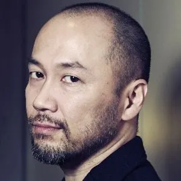

Synopsis
Inspiré de la vie de Miyamoto Musashi, Vagabond raconte l'ascension d'un jeune samouraï avide de puissance. D'abord connu sous le nom de Takezō Shinmen, il est un guerrier brutal, cherchant la gloire par la force. Mais après un périple marqué par des combats et des défaites, il comprend que le vrai chemin du sabre ne repose pas seulement sur la violence, mais sur la maîtrise de soi et la sagesse.
Il devient Musashi, un homme en quête de perfection, traversant le Japon féodal pour affronter les meilleurs guerriers, notamment Sasaki Kojirō, son futur rival légendaire. Vagabond explore la philosophie du bushidō, le dépassement de soi et la quête d'identité.
Takehiko Inoue
Takehiko Inoue, né en 1967, est connu pour Slam Dunk, un manga culte sur le basket, et Vagabond, inspiré de la vie de Miyamoto Musashi. Son art réaliste et sa narration introspective font de lui un maître du seinen. Il explore souvent la discipline, la quête de soi et la perfection à travers ses œuvres.
Découvrez d'autres oeuvres de Takehiko Inoue
| Nom | Parution | Nb tomes/chapitres | Genre | Sous-genre |
|---|---|---|---|---|
| Real | 1999 - en cours | 15 tomes (inachevé) | Seinen | Sport (Basketball), Drame |
| Vagabond | 1998 - en pause (2015) | 37 tomes (327 chapitres) | Seinen | Historique, Arts martiaux |
| Slam Dunk | 1990 - 1996 | 31 tomes (276 chapitres) | Shōnen | Sport (Basketball), Tranche de vie |